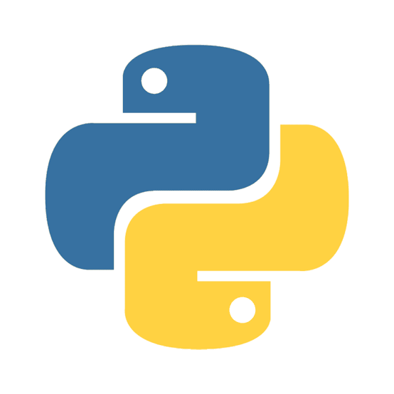
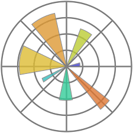

Skills





Estudante de Engenharia de Software com foco em Inteligência Artificial, desenvolvimento de agentes de IA e backend em Python. Tenho experiência prática em projetos utilizando APIs de LLMs, automação, desenvolvimento web, bancos de dados SQL, Git e Docker. Sou dedicado ao aprendizado contínuo e busco uma oportunidade para desenvolver soluções inovadoras e evoluir profissionalmente na área de tecnologia.
Liderou o projeto de análise de dados do Programa Bolsa Família (SENAI), desenvolvendo uma solução em Python para tratamento, análise e visualização de dados públicos da Prefeitura de São Paulo. Utilizando Pandas para limpeza dos dados, Matplotlib para geração de gráficos e implementação de uma interface em terminal para consultas dinâmicas e apoio à tomada de decisões.

